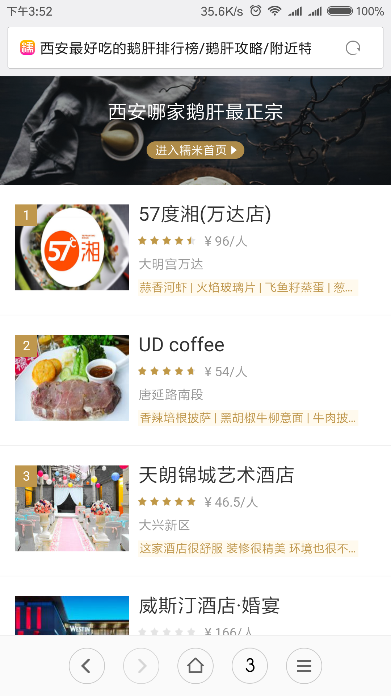

在百度待了1年多的时间。没想到这么快就要离开了。
2016.8进入百度实习，一直在糯米体系里，开发面向用户的产品，一开始做直播，做了好几个月，包括后台管理界面和一个H5分享页:
后来过了年，直播没了新需求，又做了很多组件开发，检索组件的一个小卡片:
附近页的二级菜单:
也摸过糯米主站的PC版和WAP版项目:
以及离开后才上线的精选排行榜。
确实学到了很多东西，16年糯米，还挺不错，团队还有很多大牛，Vue框架从0到熟练就是进入百度后短短几个月就达成，还学习了脚手架、构建流程等等。
真实的项目确实能比自己想的一些小东西更能锻炼人的技术，大公司的开发流程，项目规范等等也确实非常值得学习。所以如果可能的话，应届生毕业工作能进大厂则进大厂。
百度的工作环境，技术氛围，晋升体系，薪酬福利，都十分到位，然而我还是选择了离开，还是在正式入职2个月的情况下（貌似大部分公司不承认实习算工作时间）。
17年，在糯米持续亏损的情况下，部门越来越边缘，高管和总监频频换人，部门经常调整，大牛们纷纷走人。
业务也偏向于维护既有项目，类似于我刚进百度就开始从0开发糯米直播这样的项目不怎么有了。技术也开始呈现萎缩的局面，没有大牛去推动新技术的落地了。
失去了技术和氛围，还剩下BAT光环了，然而发现小T3在司内也是比较无足轻重的，又据说边缘部门不容易升T和加薪（我一直以为普调10% - 30%是说每个人每次至少涨10%呢，结果是看情况的，有可能不涨，也可能低于10%，心塞），好吧。
与其日常担忧部门会不会再次调整，自己会不会被动离开，如何才能升职加薪。不如主动走人。
就这样，再见百度，你好滴滴。